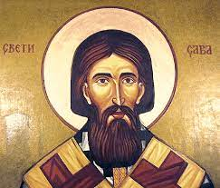

Sveti Sava
Sveti Sava, rođen kao Rastko Nemanjić, je raški plemić,
svetogorski monah, iguman manastira Studenica, prosvetitelj,
književnik, diplomata i prvi arhiepiskop autokefalne
Srpske pravoslavne crkve. Smatra se jednom od najznačajnijih
ličnosti srpske istorije i osnivačem srpske crkve koja ga slavi
kao sveca. Rođen je između 1169. i 1175. godine u mestu
Ras koje se nalazi u blizini Novog Pazara, a preminuo
je 12. ili 14. januara 1236. godine (po julijanskom kalendaru)
u Trnovu, u Bugarskom carstvu, pri povratku sa hodočašća u
Jerusalimu.
Rastko je bio najmlađi sin velikog župana Stefana Nemanje i
plemkinje Ane Nemanjić o čijem poreklu se ne zna mnogo.
Imao je dva brata: Stefana i Vukana i tri sestre: Jefimiju koja
je bila udata za vladara Soluna, Elenu koja je bila udata za
bugarskog kralja Ivana Asena i nepoznatu sestru koja je rodila
bugarskog cara Konstantina I.

Ana i Nemanja su željno iščekivali treće dete zbog čega im j
e Rastko bio veoma drag. Kada je imao 15 godina, otac mu je
poverio oblast Zahumlje da njime upravlja. Stekao je solidno
obrazovanje čitajući crkvene knjige. Dve godine kasnije,
roditelji su hteli da ga ožene, ali Rastko je imao drugačije
planove. Mnogo je razmišljao o Bogu i upoznao je kaluđere koji
su mu pričali o životu u Svetoj Gori.